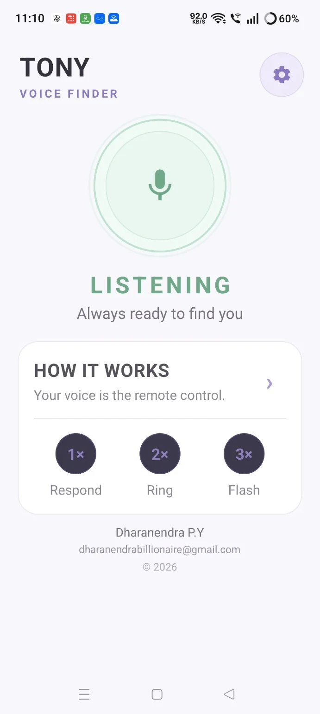
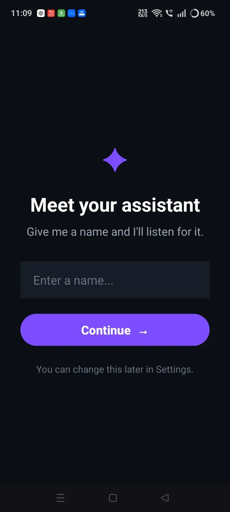
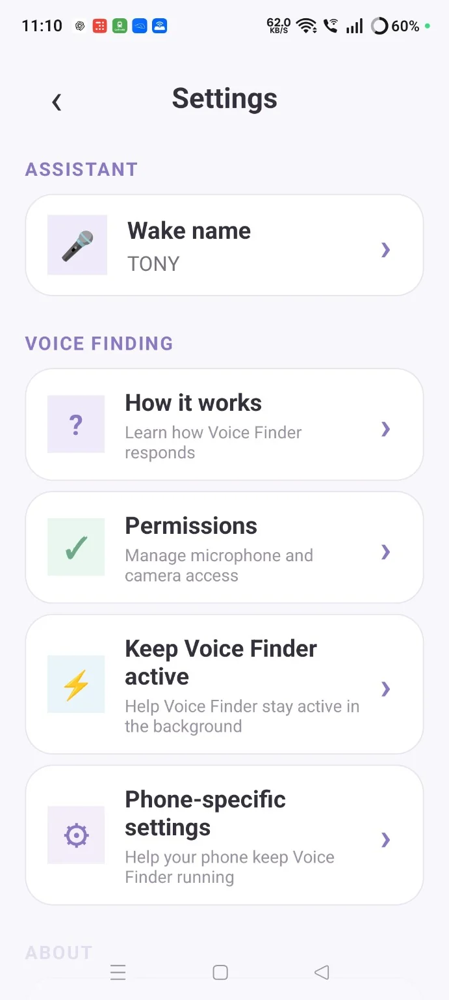
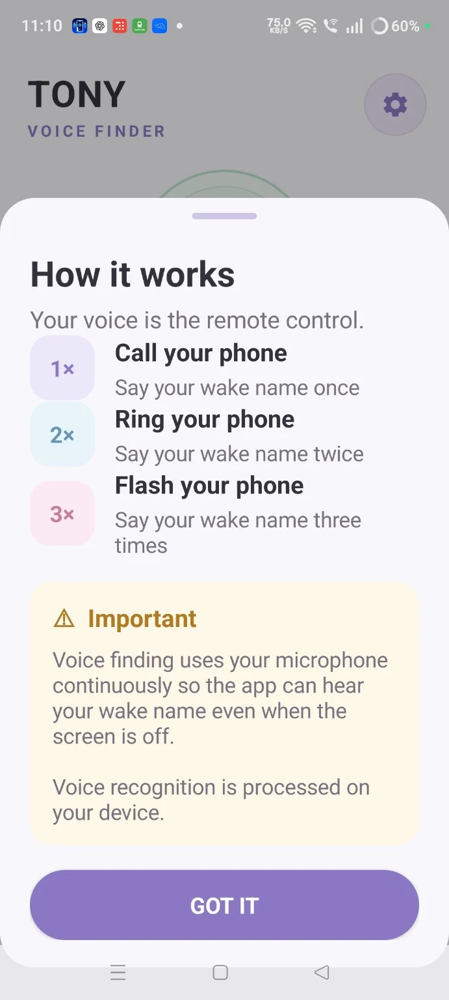

“Where did I leave it?”
Searching every room for something that is probably right beside you.
You know your phone is somewhere nearby. Under the pillow. In a bag. Between the sofa cushions. TONY turns that tiny everyday frustration into one simple action: say its name.

TONY is made for those 30-second moments when your phone is close, but invisible.
Searching every room for something that is probably right beside you.
Calling your phone does not help when it refuses to make a sound.
You want the phone to respond — not another complicated tracking process.
TONY focuses on the exact moment you need it: when the phone is nearby and you cannot find it.
Give your assistant a wake name and use your voice as the remote control.
CORE EXPERIENCEWhen sound is not useful, TONY can use vibration for its response.
Built around the real situation where your phone is locked or its screen is off.
Say the wake name once to respond, twice to ring, three times to flash.
The listener is designed to stay available in the background.
Voice recognition is processed on your device according to the app's current design.
Choose the wake name you want TONY to listen for.
Allow the required Android permissions and keep Voice Finder active.
Say the wake name once, twice or three times.
TONY responds with the action you requested so you can find the phone.
Voice finding uses the microphone continuously so TONY can hear its wake name even when the screen is off. Voice recognition is processed on your device.
No marketing mockups here. These are the real screens from the current app.



Open the app, choose a wake name, finish the Android permissions, and leave it ready. When your phone disappears into the room, your voice becomes the shortcut.
Questions before installing? →Yes. This release is built specifically for Android phones.
No. This website can distribute the signed APK directly. Android may ask you to allow your browser to install apps from that source.
TONY needs the microphone so it can listen for your chosen wake name.
The app is designed around background voice listening and screen-off use, subject to Android and device-specific background restrictions.
One call can trigger a response, two calls can ring the phone, and three calls can trigger the flashlight.
Android manufacturers apply different background and battery-management rules. TONY includes phone-specific guidance to help keep the listener active.
TONY's current design processes voice recognition on the device. Review the complete privacy policy for the exact data practices of the released build.
Read the privacy policy →